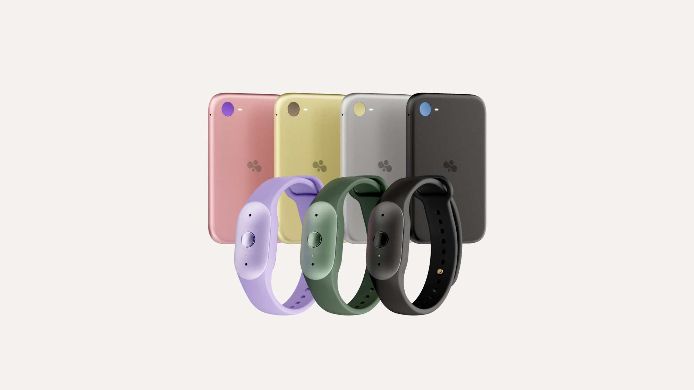
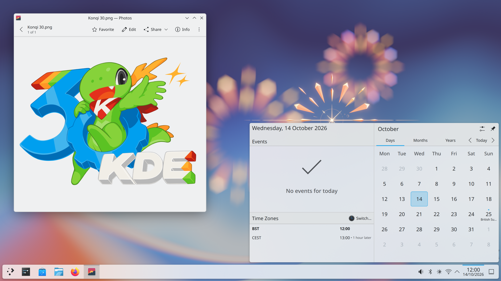

科技產品 T1
Meta 釋出 Muse Spark Open 權重，官方示範以兩台高記憶體 Mac 執行
發佈時間
Meta／Muse Spark Open
新開放權重模型採816B總參數、每次啟用42B，提供100萬token上下文；在Mac上跑的官方配置仍相當昂貴。
- 官方Mac配置為兩台各512GB記憶體的M5 Ultra Mac Studio，合計1TB，不是一般筆電需求。
- 權重透過Hugging Face等平台取得，並有多家雲端推論服務供應。
- 採Muse Model License；「開放權重」不表示沒有商業使用限制，也不能直接稱為OSI認可開源。
完整報告收合報告
事件背景與影響
企業多了可自行部署的美國大型模型選項，但硬體、推論成本與授權條件會決定是否適合實際工作，不等同所有Mac都能使用。
事件與發佈依據
原廠10/15模型與權重公告；不把日期占位的午夜metadata當成精確時分。
收錄紀錄
10/02–10/15十四份日報無Muse Spark Open事件，同窗產品表亦無命中。
尚待確認
模型表現與Mac示範出自原廠；本站未獨立跑分。購置硬體前仍須檢查實際工作負載與完整授權。
相關實體與概念
Meta、Muse Spark Open、混合專家、開放權重、本機推論、統一記憶體
科技產品 T2

Bee Frontier與Eclipse官方新品圖；Eclipse尚標示即將推出。 Amazon Newsroom
Amazon 推出 Bee Frontier 與 Eclipse，個人 AI 裝置搭配分級訂閱
發佈時間
Amazon／Bee Frontier、Bee Eclipse、Bee Pro
Bee Frontier已以US$74.99供應，Eclipse手機磁吸配件則標示即將推出、US$99.99；不是兩款都已開賣。
- Frontier可夾戴或戴在手腕，官方標示IP67與最長7天續航；Eclipse宣稱超過21天，皆非本站測試。
- 免費功能提供對話摘要、回顧與14天記憶；Bee Pro為每月US$11.99，新客有30天試用。
- 原廠稱音訊處理後刪除，但逐字稿與摘要另有保存／刪除機制，不能解讀為完全不留資料。
完整報告收合報告
事件背景與影響
個人助理從手機延伸到可隨身記錄的裝置，便利性也帶來對談同意、資料保存與長期訂閱成本問題。
事件與發佈依據
Amazon官方發布metadata為10/15 11:55:24.955UTC，取整秒呈現。
收錄紀錄
近十四份日報與同窗表均無Frontier／Eclipse此次發布，視為同一新品組合而非拆成兩則。
尚待確認
本文為美國公告價格，台灣上市與保固未確認。記錄他人對話前仍須取得適當同意，續航依使用方式而變。
相關實體與概念
Amazon、Bee、穿戴裝置、會議摘要、個資、訂閱
科技產品 T3
Sony 開放三款新 Walkman 預購，美國旗艦定價 US$5,899
發佈時間
Sony／NW-WM1ZM3、NW-WM1AM3、NW-ZX900
Sony更新高階數位音樂播放器，三款美國價格分別為US$5,899、US$2,999.99與US$1,899.99；目前確認的是預購。
- NW-WM1ZM3採鍍金無氧銅機身；WM1AM3與ZX900採鋁材並使用無氧銅背板。
- 三款均採S-Master HX與DSD重製技術，支援Wi-Fi串流及下載音樂。
- WM1兩款螢幕5.5吋，ZX900為5吋；不能把三款尺寸與材質混用。
完整報告收合報告
事件背景與影響
這是面向獨立音樂播放器市場的新一代產品，而不是舊機折扣；高售價需和實際耳機搭配、串流需求及地區服務一起評估。
事件與發佈依據
Sony美國10/15正式新聞稿與預購公告，不採先前外洩傳聞的上市日。
收錄紀錄
近十四份日報與同窗表無三款新型號此次正式發布。
尚待確認
未核實台灣價格、通路與交貨日。機身與電路設計不等於本站已驗證音質提升，亦不把離線播放續航套用到串流。
相關實體與概念
Sony、Walkman、數位音樂播放器、DSD、S-Master HX、預購
科技產品 T4

Plasma 6.8官方桌面截圖，非本站實機測試。 KDE
KDE 發布 Plasma 6.8，更新遠端桌面並移除 X11 登入工作階段
發佈時間
KDE／Plasma 6.8
新版桌面改善遠端使用與輔助操作，全面轉向Wayland工作階段；既有X11應用仍可透過XWayland運行。
- 遠端桌面可使用獨立虛擬螢幕並鎖定伺服端畫面；雙向剪貼簿仍依客戶端支援。
- 新增停留點擊等輔助功能，降低特定操作對滑鼠點擊的依賴。
- Union主題仍為beta，並非此次預設桌面全面換裝；各Linux發行版上架時間不同。
完整報告收合報告
事件背景與影響
Linux使用者升級前要檢查顯示驅動、遠端桌面與工作流程相容性，而不是將「移除X11 session」誤認為所有舊應用失效。
事件與發佈依據
官方6.8.0版本公告日期；不以較早修改時間或午夜占位值替代正式日期。
收錄紀錄
十四份日報與同窗表無Plasma 6.8版本事件。
尚待確認
官方桌面截圖不是本站實機測試。發行版套件與硬體相容性須另行確認，不能承諾每台電腦立即取得更新。
相關實體與概念
KDE、Plasma、Wayland、X11、XWayland、遠端桌面、無障礙
科技產品 T5
OpenAI 推出 GPT-Live 1.1 與 Quip，更新語音對話模型
發佈時間
OpenAI／GPT-Live-1.1、GPT-Live-1.1 Quip、ChatGPT Voice
兩款新語音模型延續全雙工對話，支援持續聆聽與回應；官方也公布自然語調、口音及安全測試說明。
- GPT-Live-1.1接替Live-1，Quip接替Live-1 mini；官方安全卡說明Plus以上預設前者、其他使用者預設後者。
- 當日更新說明涵蓋多種語言口音與新增英語聲音；帳號實際出現時間仍依部署進度。
- 安全卡指出部分合成測試類別相較前代退步，與生產提示測試結果須分開看待。
完整報告收合報告
事件背景與影響
語音更新影響使用者如何插話、停頓與溝通，但聲音更自然不代表答案更正確，也不代表安全表現全面改善。
事件與發佈依據
ChatGPT release notes的October 15, 2026段落與同日system card；不是滾動頁中其他日期的功能。
收錄紀錄
十四份日報與同窗表沒有Live1.1／Quip這次語音部署。
尚待確認
不據ChatGPT發布推論API已開放，也未實測各語言品質。安全卡評測不是現實世界錯誤率或使用安全保證。
相關實體與概念
OpenAI、ChatGPT Voice、GPT-Live、全雙工、語音模型、安全評估
全球焦點 1
續報｜澤倫斯基宣布恢復攻擊俄國煉油廠，能源攻擊暫停未能延續
發佈時間
澤倫斯基表示烏克蘭將恢復打擊俄羅斯煉油廠，短暫的能源攻擊暫停再次面臨破裂。
- 烏方將恢復行動與俄方持續攻擊烏克蘭能源設施連結。
- Reuters與其他媒體同日報導俄國煉油廠遭攻擊及火災情況，不能僅憑影片推算損失。
- 先前暫停與政治停火倡議不等於已有全面、可驗證的正式停火協議。
完整報告收合報告
事件背景與影響
煉油設施是燃料供應與戰爭資源的重要節點；雙方能源攻擊互相牽動，也影響停火倡議的可信度。
事件與發佈依據
Babel10/15 08:09 EEST轉換；Reuters同日報導恢復攻擊聲明。
收錄紀錄
10/13已收錄烏方暫停攻擊俄方能源目標；本次新增恢復攻擊的政策轉向，不重刊10/15衛星限速新聞。
尚待確認
戰時損害與攔截數字難獨立核實；雙方對暫停責任與攻擊效果說法不同，不將單方聲明視為完整戰果。
相關實體與概念
Ukraine、Russia、Volodymyr Zelenskyy、煉油廠、能源安全、停火
全球焦點 2
續報｜IEA 決定加速剩餘戰略石油釋放，優先增加柴油供應
發佈時間
IEA會員同意加速完成剩餘約1億桶庫存釋放，其中已有逾2,000萬桶柴油的具體計畫，並要求盡快推進。
- 官方稱約3.3億桶已釋出，仍有約1億桶待完成，數字為約數且會員承諾有所增加。
- 部分會員釋出超過原承諾，因此總量將高於三月原定4億桶。
- 理事會鼓勵具產油與煉油能力的會員增加原油及成品油供應，特別是柴油。
完整報告收合報告
事件背景與影響
柴油供應直接關係貨運、工業與民生價格；但庫存釋放能緩衝短缺，不能直接解決航道與生產中斷。
事件與發佈依據
國際能源署10/15理事會能源市場與安全聲明，為本窗內新決定。
收錄紀錄
10/03已收錄G7釋儲與柴油前置安排；本次新增IEA理事會的執行盤點、加速剩餘約1億桶及逾2,000萬桶柴油具體計畫，不把原承諾重算為新增供應。
尚待確認
不是再新增4億桶。實際時程依會員國情況而定，公告不保證油價立即下降。
相關實體與概念
IEA、戰略石油儲備、柴油、Hormuz、能源供應
全球焦點 3
台積電公布第三季每股盈餘 29.43 元，第四季營收指引再升
發佈時間
台積電第三季營收新台幣1兆4,942.4億元、淨利7,630.6億元，EPS為29.43元，先進製程需求持續支撐業績。
- 營收年增50.9%、淨利年增68.7%，美元營收467.2億美元，毛利率66.4%。
- 2奈米占晶圓營收8%、3奈米33%、5奈米28%、7奈米10%，7奈米及以下合計79%。
- 第四季美元營收指引為523億至543億美元，仍屬管理階層預估而非已實現收入。
完整報告收合報告
事件背景與影響
大型晶圓代工業者的實績與指引是觀察AI投資及半導體需求的重要依據，但不能直接等同所有供應鏈公司的成長。
事件與發佈依據
台積電3Q26 Earnings Release官方10/15季度財報，不用法說開始時間冒充新聞稿首發時分。
收錄紀錄
十四份日報沒有本季財報；先前客戶產品與供應鏈新聞不是此次財務結果。
尚待確認
財測受匯率、需求與成本影響，本文不提供股價方向或投資報酬保證；2030製程設備路線不能混成當季實績。
相關實體與概念
TSMC、台積電、晶圓代工、AI、2奈米、毛利率、財測
全球焦點 4
巴基斯坦白沙瓦學校屋頂倒塌，至少 35 人死亡、逾 50 人受傷
發佈時間
白沙瓦一所學校建築倒塌，AP報導至少34名兒童與一名教師死亡，另有逾50人受傷。
- 事故發生於Al Khair學校，救援人員在瓦礫中搜救並將傷者送醫。
- 較早媒體報導死亡31人，後續AP更新為至少35人，應保留統計時間差。
- 警方已對校方相關人員採取行動，倒塌原因與法律責任仍待正式調查。
完整報告收合報告
事件背景與影響
大量兒童傷亡凸顯校舍安全與監督問題；救援後的結構調查和責任認定仍不可被初步猜測取代。
事件與發佈依據
AP授權InfoNews首發06:29:02UTC，傷亡採截點前11:00:11UTC更新。
收錄紀錄
10/14日報的Peshawar字樣屬列車終點城市；本次為學校倒塌新事故，不是同一事件。
尚待確認
傷亡仍可能更新；被拘留不等於已定罪，不在缺乏工程鑑定時斷言單一結構原因。
相關實體與概念
Pakistan、Peshawar、Al Khair、校舍安全、救援
全球焦點 5
巴西參院通過縮短每週工時修憲案，四十小時制度待公布後分階段實施
發佈時間
參院以兩輪均75票對1票通過PEC 221/2019，將最長每週工時由44降至40小時，並保障兩天有薪休息且不減薪。
- 官方程序為送交修憲公布（promulgação），不是一般法案的總統簽署程序。
- 部分規定採漸進方式實施；既有更短工時與協議安排仍須依正式文本判斷。
- 兩天休息中一天優先安排星期日，不代表所有行業一律週六、週日停業。
完整報告收合報告
事件背景與影響
此舉將改變排班、人力成本與勞工休息安排；正式公布、過渡期及適用例外是執行關鍵，不是隔天立即全面改制。
事件與發佈依據
Agência Senado首發10/14 21:59巴西利亞時間，為10/15 00:59UTC，落在全球視窗內。
收錄紀錄
近十四份日報的巴西大選屬另一事件，沒有此次工時修憲表決。
尚待確認
媒體的「等待Lula簽署」用語與官方修憲程序不同，此處採官方資料。實際適用須看公布文本與例外，不作個別勞動法律判斷。
相關實體與概念
Brazil、Senado、PEC 221/2019、工時、休息日、修憲
全球焦點 6
美國 FTC 向 OpenAI 與 Anthropic 發出民事傳票，調查 AI 消費者風險
發佈時間
FTC確認對兩家AI公司發出民事傳票，要求調查其模型可能對消費者造成的風險，調查尚未等於違法認定。
- The Hill報導FTC發言人確認兩家公司收到民事傳票。
- 調查背景包括近期AI代理安全事件，但各個事件的事實與責任仍須個別釐清。
- 發出傳票不等於提出刑事指控，也不代表已下達產品禁令。
完整報告收合報告
事件背景與影響
AI代理的實際行動與消費者保護進入正式蒐證階段，公司需要回應監管資料要求，與自願安全承諾是不同層次。
事件與發佈依據
Axios首次可靠公開09:00:07UTC；The Hill後續取得FTC發言人確認。發函日與公開日分開。
收錄紀錄
前一日日報八州訴訟是州級司法行動；本次為新聯邦行政調查程序，近十四份無此次傳票。
尚待確認
調查範圍、期限與最後處分尚未公開確認；不將背景事故或公司被調查直接寫成已證實違法。
相關實體與概念
FTC、OpenAI、Anthropic、AI代理、消費者保護、民事傳票
全球焦點 7
Citizen Lab 公布廣告投放零點擊間諜軟體證據，追出 Discover-Tech 管道
發佈時間
研究團隊首次公開確認，商業間諜軟體可透過定向廣告零點擊感染裝置，並將半島電視台受害設備與Candiru連結。
- 研究把此技術稱為AdFection，指向Discover-Tech的廣告投放與Controlium平台。
- 團隊分析約40億筆競價紀錄，接觸近20萬個網站及App；接觸範圍不能當感染人數。
- 研究披露後，多家廣告平台與業界組織已採措施切斷其存取，動作日期並非全在發布當天。
完整報告收合報告
事件背景與影響
風險不只來自點擊惡意連結：廣告競價、裝置識別與第三方程式碼可共同形成攻擊管道，挑戰廣告業的供應鏈審查。
事件與發佈依據
Citizen Lab Report 195標示Date Published October 15；新聞為新公開技術證據，不把過去感染寫成今天發生。
收錄紀錄
近十四份日報無AdFection／Discover-Tech／Candiru這次研究揭露。
尚待確認
這是研究團隊的技術歸因，非司法定罪；不把所有廣告觸及裝置列為受害，也不把平台認證視為安全背書。
相關實體與概念
Citizen Lab、Discover-Tech、Candiru、Al Jazeera、零點擊、RTB、廣告識別碼
全球焦點 8
續報｜葉門亞丁政府宮殿附近遭攻擊，至少兩死六傷
發佈時間
亞丁Maashiq宮殿周邊傳出至少六次爆炸，葉門政府指遭飛彈與無人機攻擊；AP引述官員稱至少兩人死亡、六人受傷。
- 目擊者聽到多次爆炸，政府將事件描述為對其據點的攻擊。
- 胡塞方面宣稱發動行動，雙方對目標與成果的描述須分開。
- 傷亡資訊由AP引述官員提供，尚不能推算整體軍事損失。
完整報告收合報告
事件背景與影響
攻擊觸及國際承認政府使用的政治據點，顯示安全風險延伸到亞丁核心區，可能影響政府運作與區域局勢。
事件與發佈依據
AP／News4jax首次發布14:57:43UTC，傷亡採截點前更新。
收錄紀錄
10/05已收錄政府宣布軍事攻勢；今日新增Maashiq宮殿附近飛彈與無人機攻擊，是不同地點與具體傷亡事件。
尚待確認
部分官員匿名，傷亡與受損情況可能更新；宣稱擊中不等於所有軍事目標均已獨立驗證。
相關實體與概念
Yemen、Aden、Maashiq、Houthis、飛彈、無人機
全球焦點 9
川普取消胡德堡槍手處決直播，沒有撤回處決安排
發佈時間
川普宣布Nidal Hasan的處決不會公開直播；變更的是對外播送方式，不是撤銷死刑或取消處決。
- Reuters確認川普表示不直播，但受害者直系家屬可選擇到場觀看。
- Hasan是2009年胡德堡槍擊案犯人；歷史罪行與本日的新決定要分開。
- 宣布取消公開串流並未解決死刑執行本身的其他法律與倫理爭議。
完整報告收合報告
事件背景與影響
公共處決影像涉及政府權力、受害者家屬與媒體倫理。標題若省略「直播」兩字，會把政策轉向誤寫成赦免。
事件與發佈依據
AP首次發布14:13:38UTC；Reuters與NPR同日交叉確認取消直播。
收錄紀錄
近十四份日報未收錄此次直播政策轉向，先前處決計畫僅交代背景。
尚待確認
實際執行安排仍以主管機關後續文件為準；本文不把政治聲明推論成所有法律程序已結束。
相關實體與概念
Donald Trump、Nidal Hasan、Fort Hood、死刑、直播、受害者家屬
全球焦點 10
阿爾巴尼亞學生示威連續第三日爆衝突，政府與反對派對立升高
發佈時間
地拉那學生與反政府示威者週四再與警方衝突，警方使用催淚瓦斯與水砲，並拘留部分示威者。
- 抗議已連續第三日出現衝突，學生要求教育改革及總理Edi Rama下台。
- 反對派支持抗議並要求過渡政府；Rama強調法律秩序，拒絕以街頭壓力更替政府。
- 歐盟代表團呼籲當局採取合比例回應，也要求示威者避免暴力。
完整報告收合報告
事件背景與影響
教育訴求與反貪腐、政治問責結合，使局勢不只是單一校園爭議；警方比例原則與示威者克制同樣受到關注。
事件與發佈依據
AP首次發布10:04:10UTC；Euronews14:11:48UTC報導週四衝突。
收錄紀錄
前十四份日報未收錄阿爾巴尼亞抗議主線；選取週四新的衝突，不把週三畫面改稱當日。
尚待確認
不同日期的受傷與拘留統計口徑不同，本文不加總成週四傷亡；貪腐指控與政治表態不等於法院認定。
相關實體與概念
Albania、Tirana、Edi Rama、學生抗議、警察比例原則、EU
研究備註
時間、來源與後續追蹤
研究截點 2026-10-16 08:02:15（Asia/Taipei）
研究時間與範圍
研究截點：2026-10-16 08:02:15（Asia/Taipei）。全球新聞：2026-10-15 08:02:15 至 2026-10-16 08:02:15（Asia/Taipei）。科技產品：2026-10-02 08:02:15 至 2026-10-16 08:02:15（Asia/Taipei）。